PromiseHub · Video 81
Explore the public website
Published programs with a way to apply, and three ways to help, for anyone, without an account
Published programs with a way to apply, and three ways to help, for anyone, without an account
/site/harbourview names Harbourview Youth CollectivePublicSiteResolver: the one place a tenant is chosen without a membershipADR 0043 · ADR 0075 · L2-132
Four steps, what we run, open now.
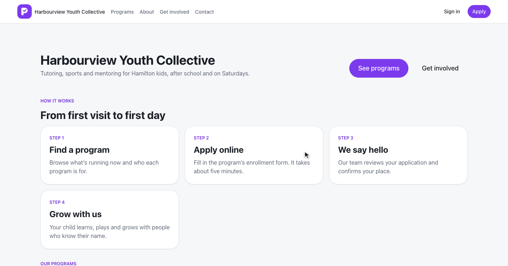
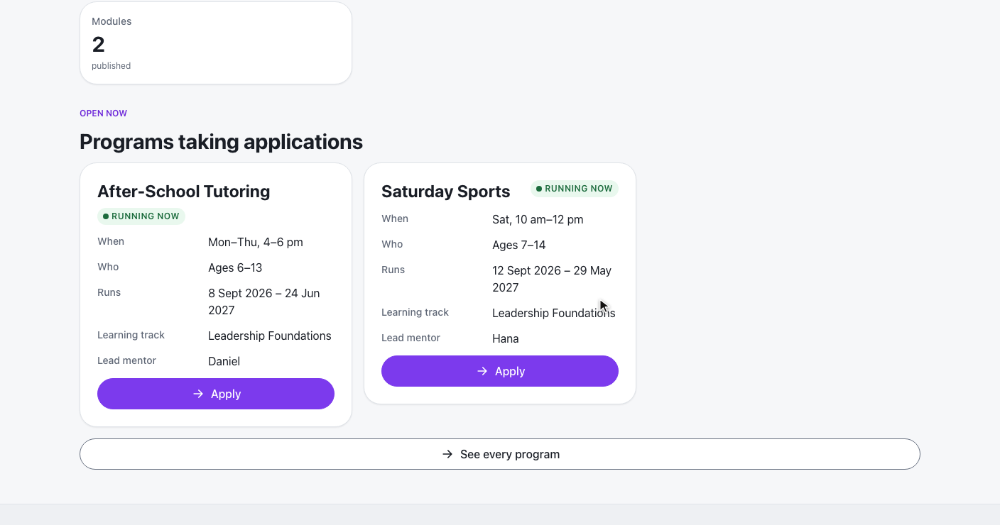
GET /website/{slug}/content · PublicContentHandler · L2-133
Cards, the learning track, mentorship, Apply.
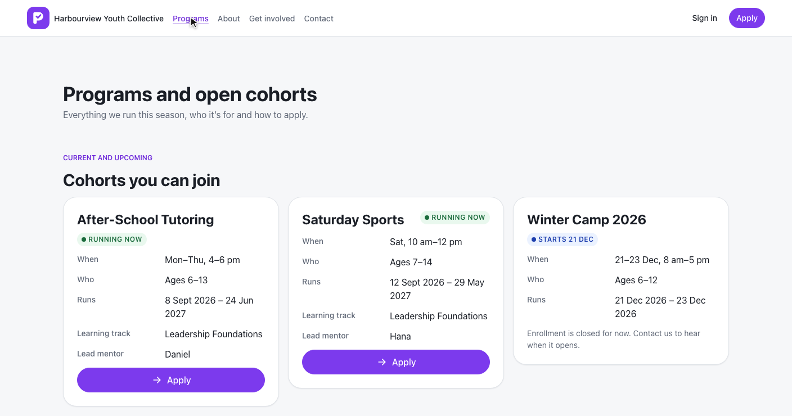
Active, not ended, by start date · Running or Upcoming · Apply only while open
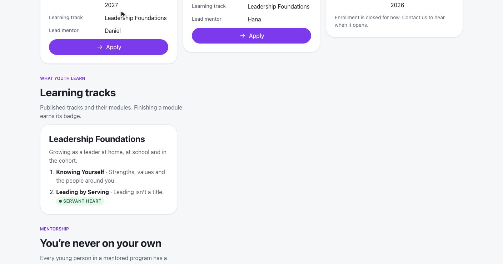
Learning: published tracks, modules and badges · Mentoring: lead mentor’s first name, the mentorship model
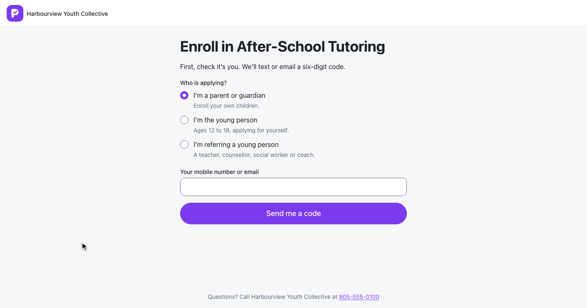
/g/enroll/after-school-tutoring · one intake, one review queue (prompt 58)
Errors inline, then Dana’s question sent.
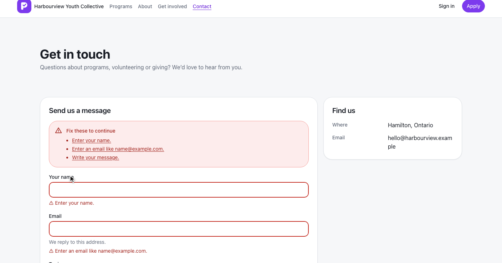
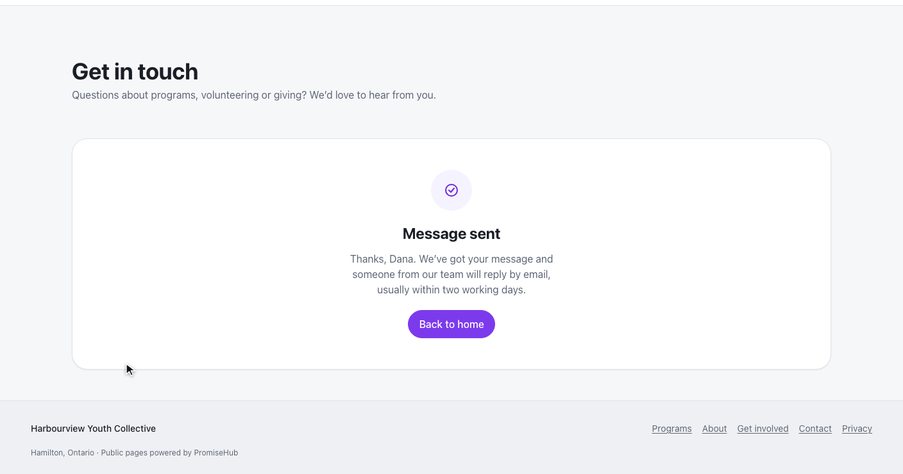
POST /website/{slug}/contact · ContactMessage · 204 · 422 by field
Leo volunteers; Dana gives monthly.
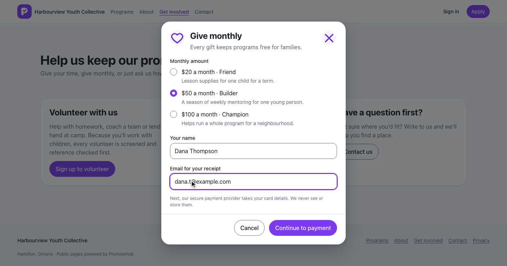
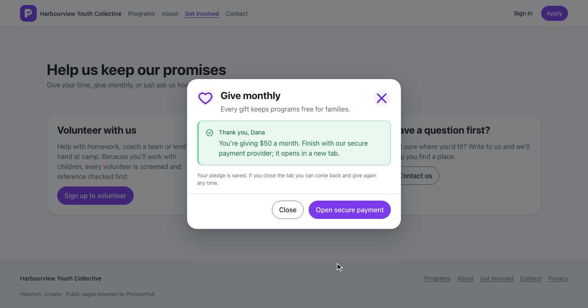
Volunteer: VolunteerInterest with the screening acknowledgement · IPaymentProvider · DonationPledge stores the provider’s reference only · 503 unavailable without a provider
WebsiteEndpoints: every route AllowAnonymous(), one resolvertoo-manyWebsiteRequestsHandler · WebsiteRequestLimit · L2-134 · L2-031 · L2-032
Links wrap, cards stack, nothing scrolls sideways.
Northgate, nothing open, Try again, not found.
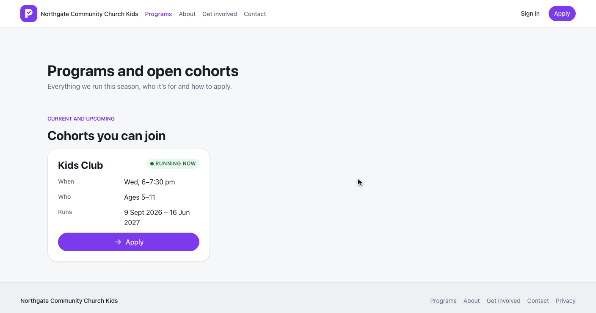
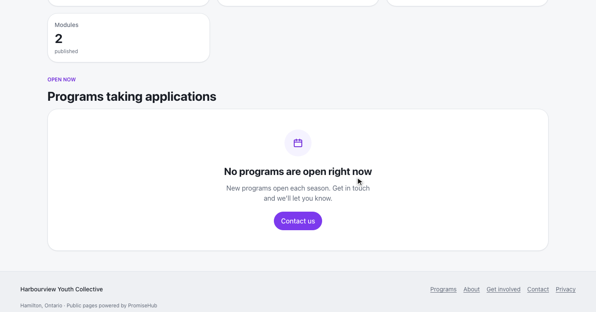
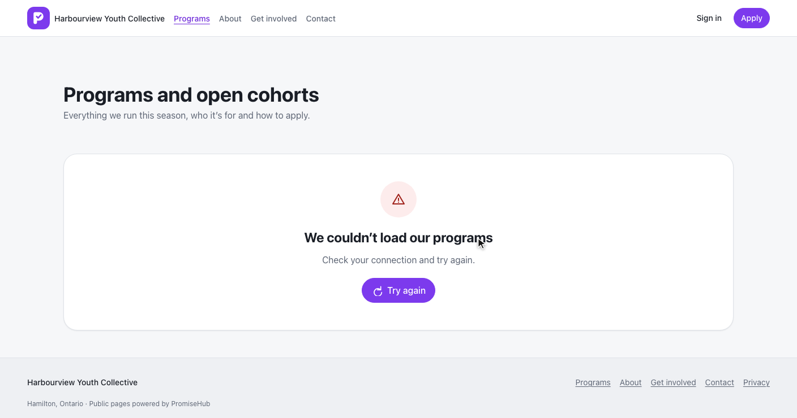
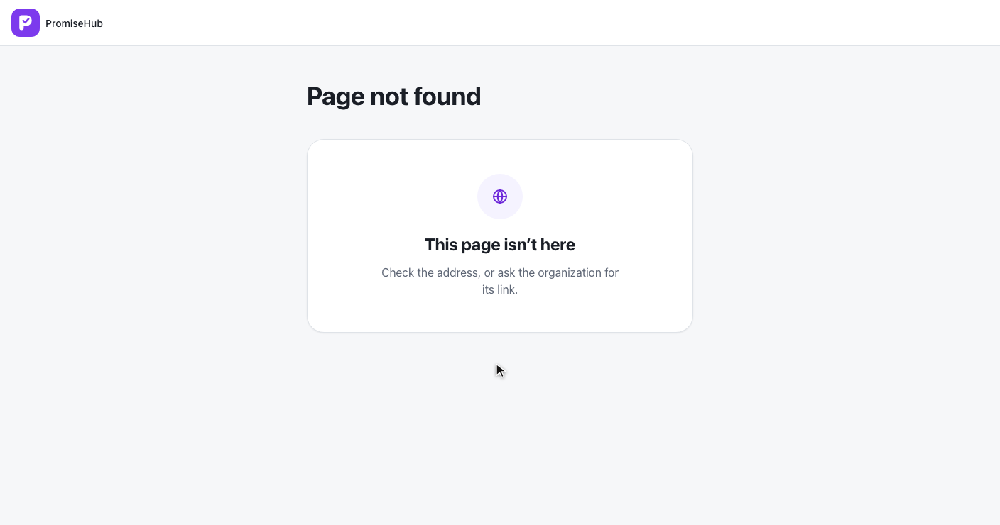
PublicContentTests: published only, module gates, 404s, a second organizationWebsiteRequestsTests, WebsiteDonationsTests: validation, limit, audit, provider, tenancylanding, programs, about, navigate, contact, get-involved, donate specs with axe, laptop and phone
That completes the Waypoint journeys